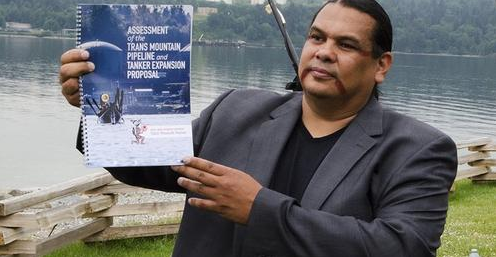
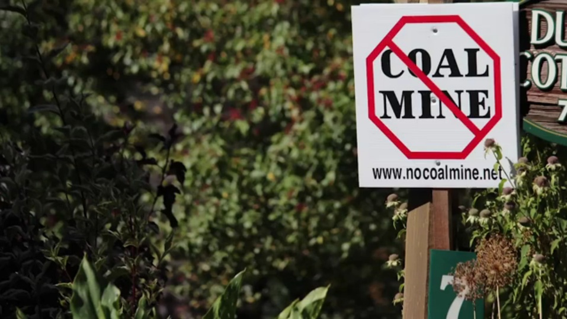
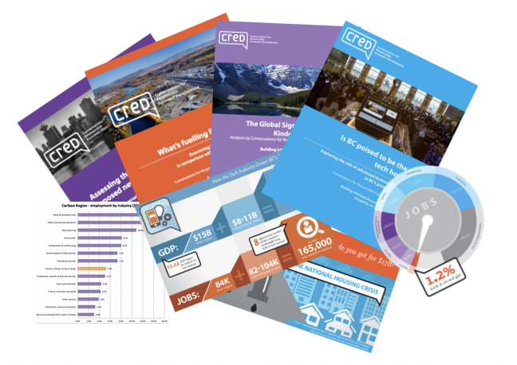

Impact Chronicle #1: Finding the Pressure Points
When Kinder Morgan's pipeline threatened BC's coast, we founded Tanker Free BC and partnered with T'sleil-Waututh Sacred Trust which mobilized legal challenges, shareholder campaigns, and grassroots actions that delayed construction for a decade. We shifted public opinion on pipeline projects through multi-pronged messaging, media campaigns, events and by mobilizing new groups, old groups and thousands of on the ground voices. And when the Orcas entered the chat? Suddenly, it wasn't just about pipelines; it was about who we were willing to lose.
The Result
"We'll never forget Chief Rueben George speaking directly to Richard Kinder at their shareholder's meeting shortly before the company pulled out of the project. 'We are going to stop this project, we are doing it to protect the inlet which is our inherited responsibility and we are doing it for our kids and their kids and we are also doing it for you and your kids because this is the right thing for everybody.'"
Impact Chronicle #2: VoteClimate - Changing the Conversation

We turned climate apathy into electoral firepower, saturating swing districts with thousands of billboards, bus wraps, and digital ads until politicians saw climate warnings everywhere - from their morning coffee shop to their evening commute. When targeted mail campaigns started delivering stacks of voter letters thicker than Santa's Christmas pile, even the most stubborn incumbents got the message.
The Result
Impact Chronicle #3: Stopping the Unstoppable
When the Raven Coal Mine was fast-tracked for approval, we mobilized fishers, scientists and local residents to expose its threats to oyster beds, watersheds and climate stability. Our research became the backbone and our media strategy turned regional concern into outrage.
At Thor Chemicals, our investigations triggered mercury testing that forced a UN intervention and global attention on what the company had buried for years.
The Result
Impact Chronicle #4: Conversations for Responsible Economic Development - Rewriting the Cost-Benefit Analysis
We flipped the script on corporate climate engagement. Instead of protests or petitions, CRED equipped businesses with hard-hitting economic analysis that made clean energy policies impossible to ignore; even for the most reluctant.
Results
Our favorite moment? When we heard from an insider that "Your CRED economic brief was the only doc on the Minister's desk with coffee stains." We soon discovered that somehow, Natural Resources Canada was using it as a talking point and sending it out to all of the key players.
Impact Chronicle #5: Disability Without Poverty - Stories That Moved a Nation
We amplified the voices of disabled Canadians to transform cold policy debates into urgent human conversations. Partnering with Disability Without Poverty, we helped turn lived experience into political currency, where ministers heard from constituents, not just statistics.
Results
- • Historic legislation tabled to establish Canada's first national disability benefit
- • "Nothing About Us Without Us" became more than a slogan, it shaped policy design